Upper body
T-shirt
Short-sleeve. Instrumented seams over the shoulders, side panels and spine. Tracks upper-back posture and the trunk during pressing and pulling movements.
ShouldersSidesSpine
Voltwear garments carry insulated conductive threads sewn along their structural seams. When you bend, twist or lift, the threads stretch with the fabric and their capacitance changes. A small, removable pod reads that change and sends it to your phone.
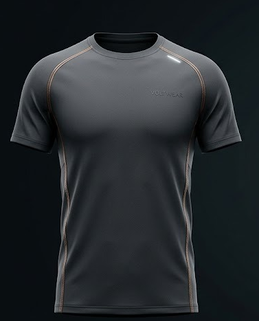
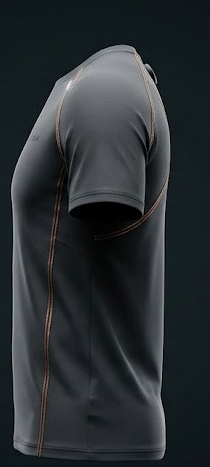
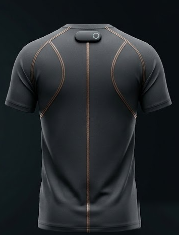
A garment already has seams exactly where the body articulates: shoulders, sides, spine, hips, knees. Voltwear puts the measurement there instead of adding hardware on top.
A conductive core wrapped in an insulating jacket is sewn over the structural seams of the garment. The insulation keeps sweat and skin contact from affecting the reading.
When a seam stretches or bends, the geometry of the thread changes and so does its capacitance. Each seam becomes one channel that tracks how much that part of the body has moved.
The pod clips into a dock below the collar, where the seams converge. It measures each channel, combines them into a 3D picture of body movement and sends the result over Bluetooth Low Energy.
In passive mode it watches your posture through the day and nudges you when you slump. In active mode it counts reps and flags form that drifts from your own baseline.
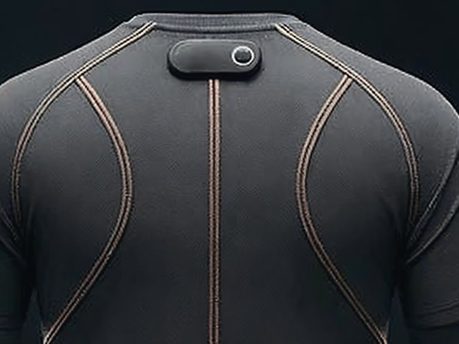
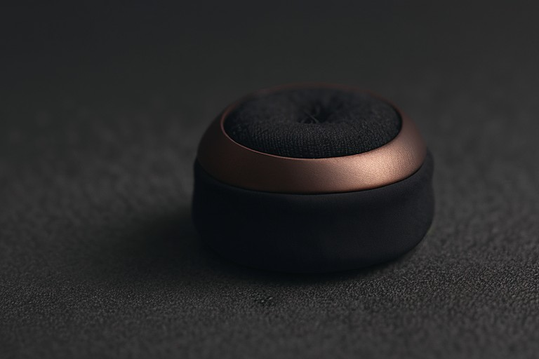
Every piece uses the same thread, the same pod and the same app. What changes is which seams are instrumented, and therefore which joints the garment can see.
Short-sleeve. Instrumented seams over the shoulders, side panels and spine. Tracks upper-back posture and the trunk during pressing and pulling movements.
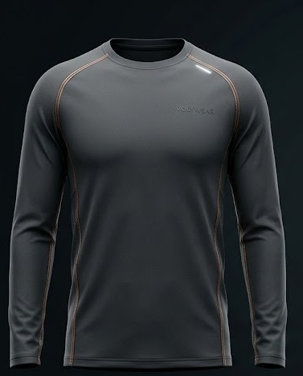
Adds a seam channel along each arm, so elbow flexion is visible alongside the shoulders and spine. The better choice for cooler conditions and for arm-dominant lifts.
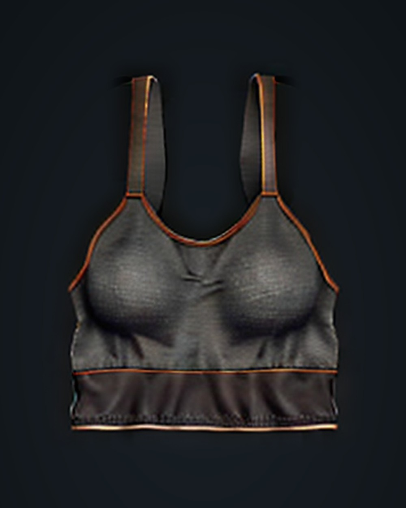
Racerback with instrumented straps and under-band. Tracks shoulder position and upper-back posture on its own, or under any other top.
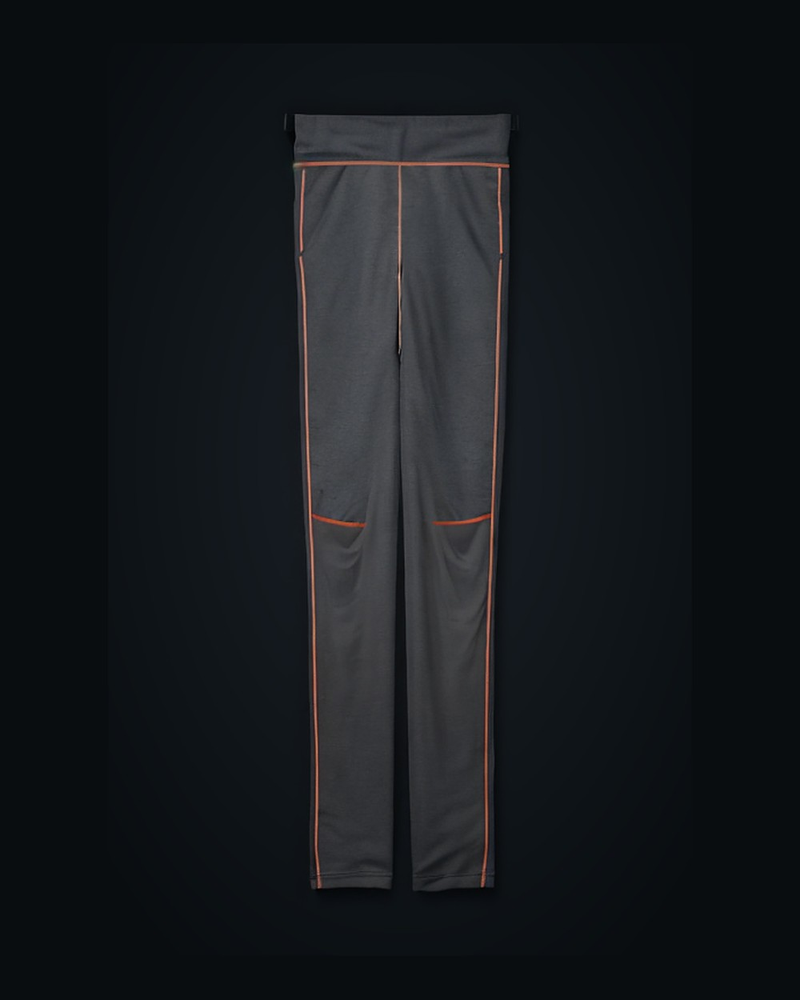
Compression fit. Seams along the outer leg and around the knee track hip and knee angle for squats, lunges and running.
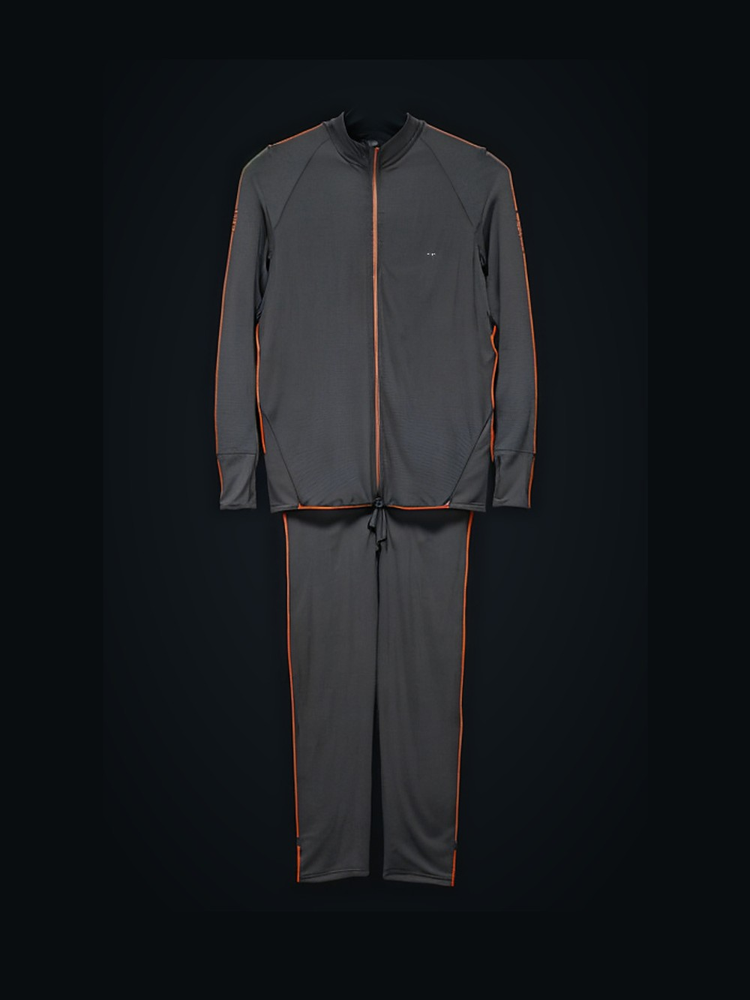
Top and pants instrumented as one system. Upper and lower body seams are read together, so the app sees the whole movement chain: shoulders, spine, hips and knees in the same frame.
This is the configuration in the Elite package.
The conductive thread follows the raglan shoulder seams, the side panels and the centre-back seam. The pod dock sits at the top of the spine seam, below the collar.
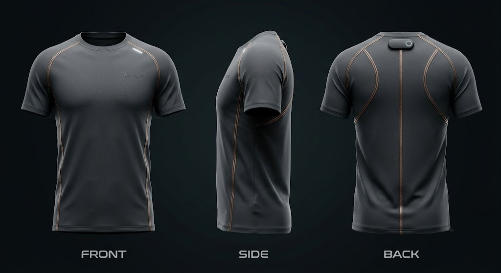
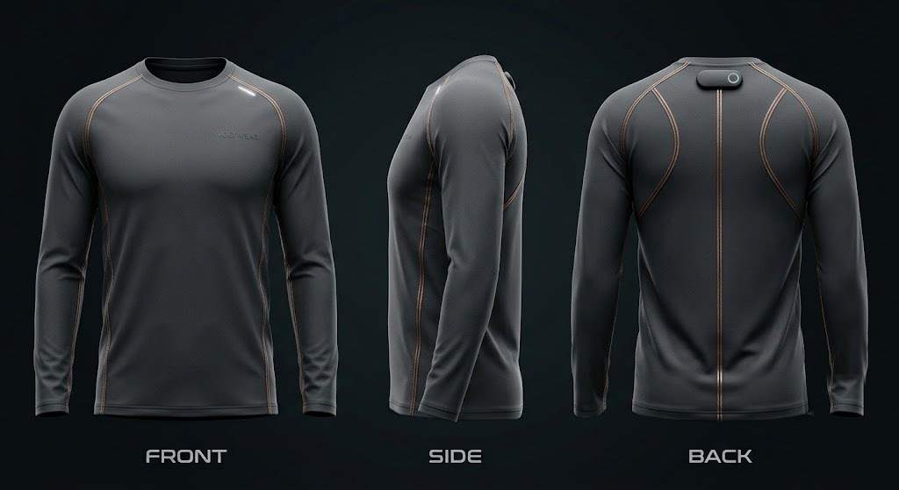
The pod streams seam data over Bluetooth Low Energy. The app does the interpretation, so the garment itself has no screen, no buttons and nothing to charge except the pod.
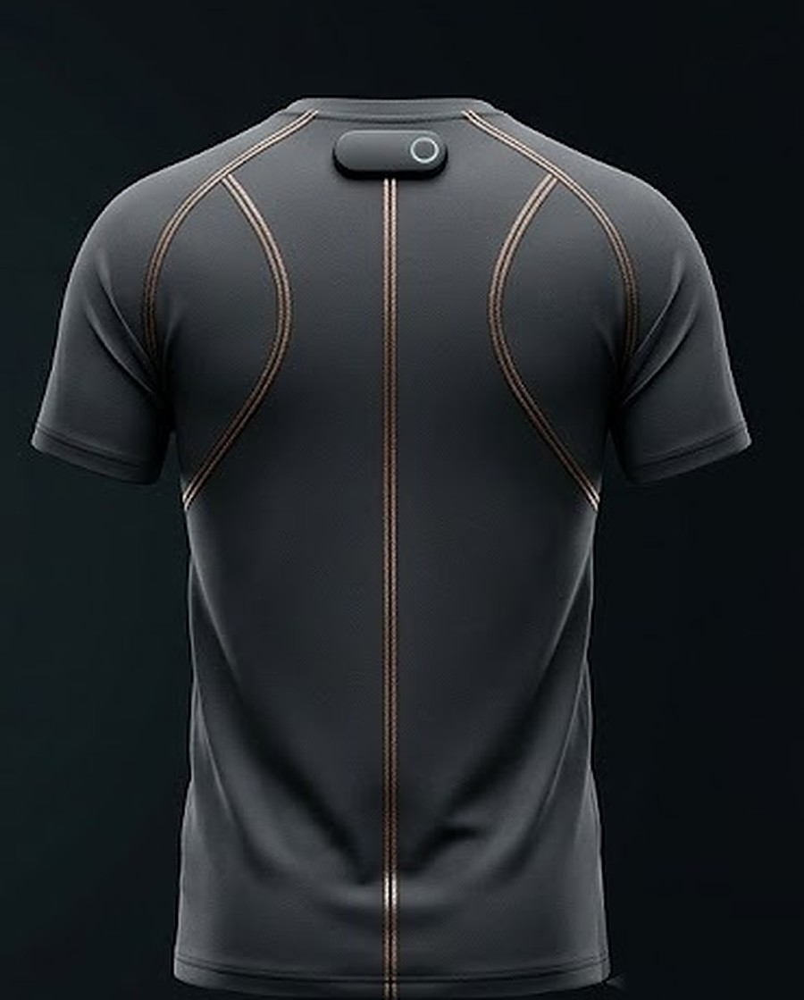
With the garment on and the app in the background, the spine and shoulder seams are sampled through the day. When your position drifts from your own upright baseline and stays there, the phone sends a short prompt. Sit back up and it stops.
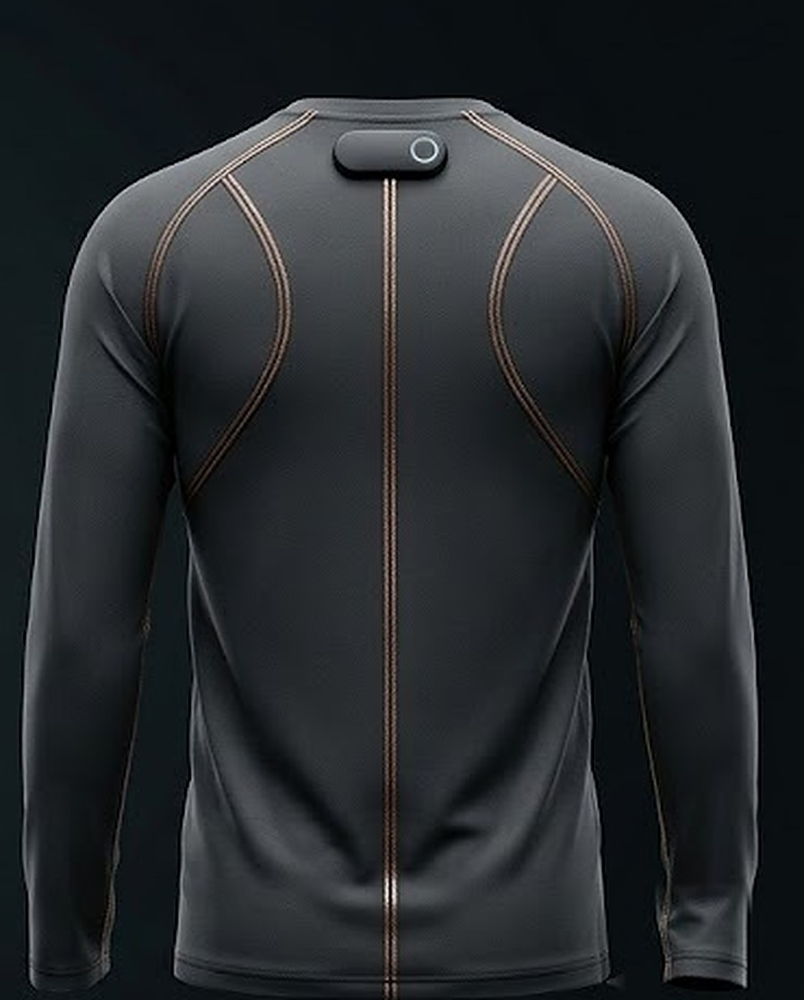
Start a set in the app and the seam channels are read at a higher rate. Each repetition produces a repeatable pattern across the shoulder, spine, hip and knee seams, which the app counts. If the pattern changes over the set, for example the back rounding or one side leading, it tells you which seam moved differently.
Both include the garment, the micro-pod, a charging cable and the app for iOS and Android. Prices in Indian rupees, inclusive of GST.
One upper-body garment with a single micro-pod.
The full-body tracker: top and pants with two micro-pods.
Capacitive thread sensing measures fabric deformation. That is all it measures. The following is worth knowing before you buy.
There is no heart-rate, ECG, muscle-activation or temperature sensing in these garments. The threads report how much each seam has stretched or bent, and the app works only from that.
The seams have to move with the body for the reading to mean anything. A loose garment gives a weaker, noisier signal, so the garments are cut close to the body.
Unclip the pod, then machine-wash the garment cold on a gentle cycle and line-dry. The thread is insulated and sewn in, so it does not need any special handling beyond that.
Voltwear is a fitness and posture aid. It is not designed, tested or certified to diagnose, treat or monitor any medical condition.
Posture nudges and form feedback compare you against your own baseline, captured during setup and at the start of each set. The app does not judge you against a population model.
Seam data is processed on the phone. Session history stays in the app unless you choose to export it.